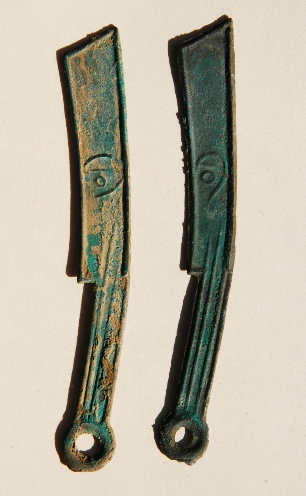

Gojoseon
Gojoseon (고조선) is the ancient Kingdom which ruled over Northern Korea around 500 BCE. Gojoseon was an alliance of a series of fortified towns stretching from the Daedong (대동) river in the North, to the Liao (리아오) river in the south. The gojoseon was regarded as the most advanced society in the Korean peninsula at the time.
Foundation
According to mythology, the Gojoseon kingdom was founded by Dangun Wanggeom (단군 왕검), the grandson of the lord of heaven, Hwanin (환인). Supposedly, Dangun was born when a tigress and female bear wanted to become human. Huanung (환영), Dangun's father, then
gave them garlic and mugwort and told them to stay in a dark cave and not see the sun for 100 days. The tigress became impatient and left the cave, the bear however did not and after 100 days became a human woman. She would later marry
Huanung and give birth to Dangun.
Supposedly, Dangun was born when a tigress and female bear wanted to become human. Huanung (환영), Dangun's father, then
gave them garlic and mugwort and told them to stay in a dark cave and not see the sun for 100 days. The tigress became impatient and left the cave, the bear however did not and after 100 days became a human woman. She would later marry
Huanung and give birth to Dangun.
There is also a myth which states that Gojoseon was founded by Gija (기자), a Shang dynasty prince, who fled to Korea during the fall of the Shang dynasty in 1122 BCE and founded the kingdom, but most believe this to be a legend developed by the Chinese to justify their invasion of Gojoseon in 108 BCE.
In reality, historians believe that the Gojoseon kingdom rose from an allience between the fortified towns in the area between the Daedong and Liao river basins. While it's not known exactly when the Gojoseon was founded, there are documents of it existing as far back as 700 BCE in Chinese texts
Relations with China
While it's not known exactly what the relationship between Gojoseon and China was like, evidence seems to indicate that Gojoseon acted as a trading intermediary between China and the Jin state to the south of the Korean peninsula as there have been knife coins found throughout the Gojoseon region which were used in the Yan state around 500 BCE, as well as tombs which are very similar to those found throughout China during this period. There are also horse traps and better iron tools in the areas closer to China which were most likely introduced by China, leading to an increase to the peninsula's agriculture as well as it's overall prosperity.
collapse
After being weakened by attacks from the Yan state, circa 300 BCE, Gojoseon began it's low decline, until it's eventual, final collapse 100 years later. The fall of the kingdom was brought about by a Chinese refugee from the Yan statenamed Wiman Joseon (위 만조손), along with his 1000 followers after they were asked by king Chun (준) to fortify Gojoseon's NorthWestern border for fear of more attacks from the Yan state. Instead of following his orders, Wiman abandoned his duty as a general and instead userped the throne from King Chun, who then feld to the Jin state.
in 108 BCE wiman was defeated by the Han dynasty of China, and the capital, Wanggon(왕검) was captured. The Han emperor, Wu, then expanded his empire and acquired Northern Korea's natural resources including iron and salt with an army of 50,000 soldiers and a 7,000 man naval force. Wu then divided Korea into 4 sections, each directly controlled by the Han central government. Those who managed to escape from Wiman Joseon before it's collapse and occupation by the Han state, fled South and would later successfully rise up and defeat the Chinese, leading Korea into the Three Kingdoms period.